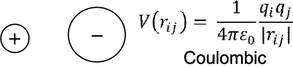

Non-bonded functions¶
While the bonded components are mainly responsible for maintaining molecular structures, the inter-molecular functions are mainly responsible for modelling the overall behaviour of the system model, providing properties such as densities, molar volumes, heats of vaporisation, etc.
Non-bonded functions are mainly composed of two components: the short-ranged van der Waals (vdW) interactions and the long-ranged electrostatic interactions. These energy components are calculated based on interactions between pairs of atoms and the functions depend only on interatomic distances.
Note
For atoms within a molecule, non-bonded interactions will usually only apply on the 1-4 atoms (atom pairs separated by three successive bonds) onwards. For 1-4 atoms, these interactions might be scaled by a constant factor that depends on the force field.

Electrostatic interactions
Coulombic functions are usually used.
{kind=link}
As we will see later in the page related to cutoff distances, special methods are needed to more accurately sum these up.
van der Waals interactions
There are many types of functional forms, the commonest are as follows:

The functions consist of two components: positive terms that describe electron repulsions due to the Pauli exclusion principle and negative dispersive terms due to electron cloud fluctuations.
Lennard-Jones 12-6 is commonly used in organic systems and condensed phase systems. There are other forms: LJ 9-6 is used by the PCFF force field scheme, while the 9-3 form is used for wall adsorption. More about LJ functions will be discussed later.
The Buckingham form is normally used in inorganic systems such as ionic oxides. The Pauli repulsion is more accurately described by the exponential term. There are three constants: \(A\) affects how high the energy barrier rises and both \(\rho\) and \(C\) affect the size and shape of the function graph.
Due to nature of convergence of the exponential term as \(r \rightarrow 0\), an unphysical ‘well collapse’ can occur at small distances. The nature of the collapse can differ depending on the combinations of the three constants. However, this can be masked by the electrostatic function for ion pairs of like-like (same sign) charges.